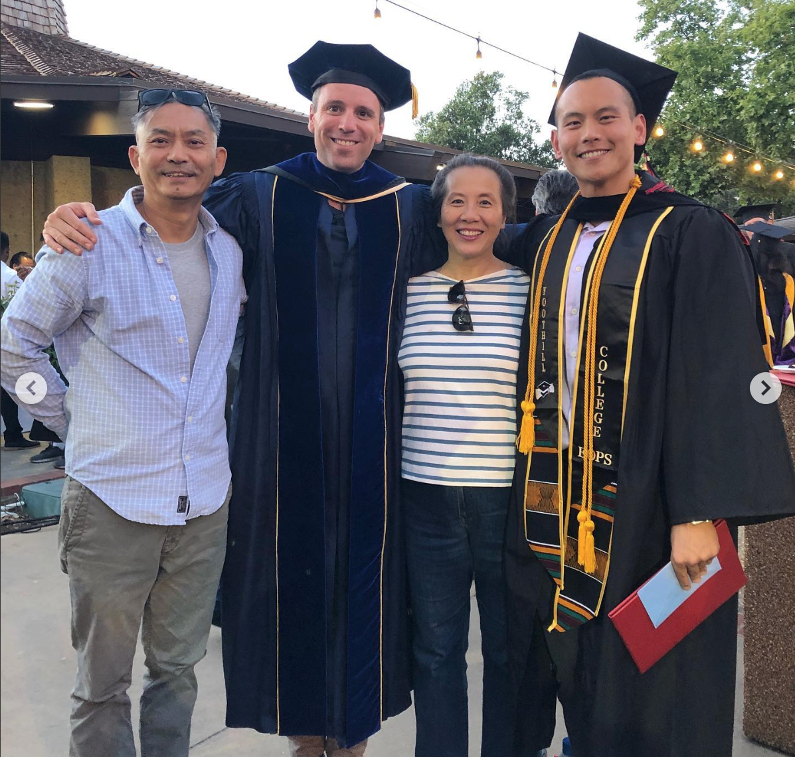

Before the tools —
the reason I built them.
The sections below prove I can do this work. This is why I will.
I was born in Chengdu, China. My dad was a journalist. My mom was a flight attendant who later built a business in interior design as China opened up to the world. I grew up around two quiet ideas: information matters, and access changes everything.
Being able to grow up and build a life here, in the Bay Area, is something I don’t take lightly. It feels like both a privilege and a responsibility. That’s part of why the community college system matters so much to me.
My real education didn’t begin until I started at Foothill College in 2017. That’s where I learned how to learn, how to believe in myself, and how to design a path — not just follow one.
I still remember moments where something small — a fully occupied class, an academic calendar constraint — created real uncertainty. Not dramatic failures. Just friction. But enough to change your trajectory if it hit at the wrong time. That stayed with me. This system is not abstract to me.
The students who need this system most are the ones who’ll never tell you when it fails.
FHDA is the fiscal agent for CVC-OEI — the place where this system lives. Making sure a cross-enrollment sync doesn’t fail is how I honor the opportunities this exact system gave me. That’s not a metaphor. Foothill changed my life. I want to protect the infrastructure that makes that possible for the next student.

The work continuesOver the past several years, I’ve worked inside the systems behind those moments — supporting financial aid and enrollment services, working with Banner and PeopleSoft across multiple colleges, building in Canvas at OpenStax, and teaching computer science at Foothill and SJSU.
When I taught, my sections ran three times the attendance of parallel sections — not because of better teaching, but because I was stubborn about understanding how learning works and removing friction. That’s the same instinct I’d bring to support.
Systems reliability is student access. That’s why I built what follows — because this is the work I want to do, at the place where it matters most.
Look up any college in the Exchange
Search any college by name, system type, or issue status. Foothill and De Anza are pinned. 116 colleges, 4 student record platforms, different IT capacities — filter to see who needs extra support.
The numbers behind course sharing
From 1,500 to 33,000 cross-enrollments in three years. The support workload scales with it.
Same enrollment — working vs broken
When the Exchange works, a student at Chabot takes MATH 1A at De Anza without thinking about it. When it breaks — the course vanishes from Canvas. Teal flags show where early detection could have caught it.
How student data flows — and where it breaks
Four layers from home college to Canvas. FHDA uses Banner Direct — the most reliable integration path.
PeopleSoft · Colleague
+ FA Dashboard
Parchment transcript
Canvas access
Spot the failure before the tickets arrive
Real-time health for 115+ colleges. Foothill and De Anza highlighted. The most dangerous failures are the ones nobody reports — zero tickets plus a degraded system isn't a success story, it's a silent failure.
Missing course reported — where do you look?
Walk a real incident from symptom to resolution. FHDA uses Banner Direct — the most reliable integration path. A student with an add deadline tomorrow needs resolution, not bureaucratic delays.
Is this one ticket — or twenty waiting to happen?
Ticket volume mapped to the academic calendar. If 10 colleges generate 60% of tickets, that's not a support problem — it's an onboarding gap. Each pattern has a different intervention.
If the fix isn’t documented, it didn’t scale.
Four fix types — editable, copy-ready templates. A college shouldn’t call CVC for the same issue twice. Good documentation turns individual fixes into institutional knowledge.
The same failure, written five different ways
Same incident, five audiences: student, campus IT, registrar, internal team, and Board. Getting the audience wrong costs trust. Getting it right costs nothing.
Student Impact: 47 students experienced 4–12 hour delays in Canvas course access. 12 required manual intervention near the add deadline. Zero students lost enrollment; all resolved within SLA.
Equity note: Disproportionate impact on low-income students — the sync delay coincided with auto-drop-for-nonpayment windows at 3 colleges. Students relying on Consortium Agreements (3–5 day processing) were at highest risk.
Root cause (plain language): An expired security credential between two systems. Analogous to a building key card that stopped working — the door is fine, the person is authorized, but the reader rejects them until IT reissues the credential. Why an analogy
Remediation: Credential regenerated. Automated expiration monitoring added (alerts 72 hours before expiration). KB article published.
Recommendation: No board action required. Status update recommended in quarterly ETS report under "CVC Exchange Reliability."
How do you know when to own it vs escalate it?
Who to contact, how fast, and what to bring. The job requires tact, discretion, and independent judgment — fixing the student's problem without making the registrar wrong.
What if course sharing wasn’t a last resort?
17 triggers across the academic year — targeted to counselors, FA offices, and peer ambassadors at the right moment. CVC@ONE already offers an Online College Counseling course for advisors — outreach should build on that foundation, not duplicate it.
Transfer confidence — for students and the staff who advise them
Verification workflows, registration checklists, and counselor scripts. Built for Foothill and De Anza — serves students, counselors, and FA offices.
What could AI actually do here?
Grounded in CISOA 2026 themes and CVC@ONE’s Spring 2026 AI series. Each card: today vs with-AI.
Ten friction points a support analyst can fix today
Systemic friction in the Exchange enrollment pipeline — from enrollment cancellations to payment timing misalignment. Each one is actionable now.
Four lenses on the same barriers
The 10 barriers above, analyzed by lifecycle stage, campus profile, equity impact, and ticket correlation. Each view reveals a different intervention.